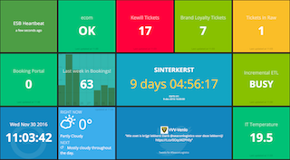

Go ahead, try it…
Say "Hello!"
Hello there!
I can show you pictures…
Say "Show me cute kittens!"
Say "Show me Arches National Park!"
Now go wild. Say "Show me…" and make your demands!
That's cool, what is the business use?.
No problem, say "Show customer dashboard"
annyang plays nicely with all browsers, progressively enhancing modern browsers that support the SpeechRecognition standard, while leaving users with older browsers unaffected.
Please visit http://www.annyangjs.com/ in a desktop browser like Chrome.